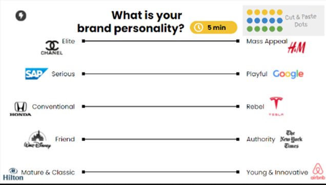

Personal
Name? Age? Educational?
location?
Write here
Yo me llamo Mauricio Alejandro Vazquez Gongora
Tengo 22 años.
Vivo en el
estado de Campeche.
Estudio la carrera de Ingeniería
en Sistemas Computacionales
en la Universidad Autónoma de Campeche.
Goals & Motivation
What do they want to archieve?
What gives them energy? what holds them back?
what keeps them up at right?
Write here
Mi meta por ahora es terminar mi carrera.
El hecho de que nada viene facil en esta vida, todo hay que ganarcelo y primero que nada ver por uno mismo
El obtener conocimiento suficiente para mantener mi objetivo principal
A Day in the Life of...
What makes a successeful day?
which persons and things do they interact with?
What makes them feel satisfied?
What gets them frustated?
Write here
Prestar atencion a las clases
Con mi madre, mis amigos y los maestros.
El terminar las cosas bien, tarde pero seguro.
No poder termiarlas por no entender bien de que trata o trabarme por no saber que hacer.

Soy más de Mass Appeal
soy más de Serious
Soy más Rebel
Soy más Friend
Soy más Young & Innovative